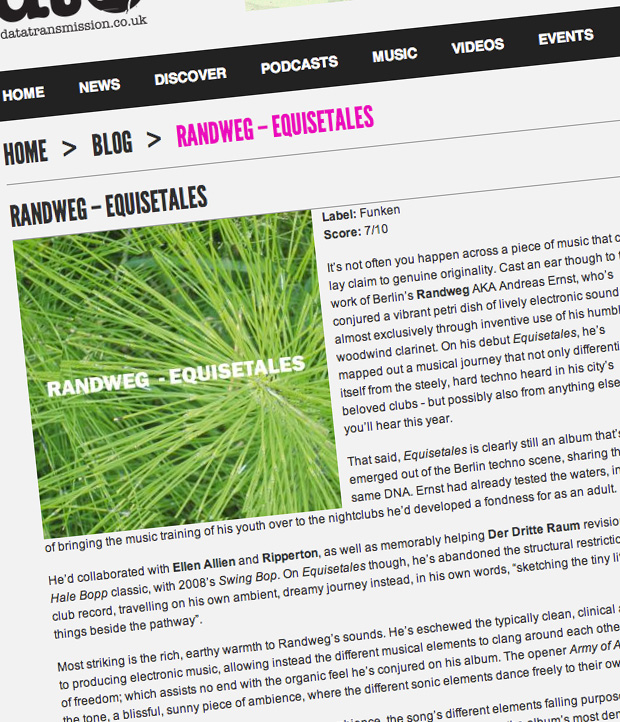

Randweg - Equisitales
{kind=link}

Label: Funken Score: 7/10 It’s not often you happen across a piece of music that can lay claim to genuine originality. Cast an ear though to the work of Berlin’s Randweg
AKA Andreas Ernst, who’s conjured a vibrant petri dish of lively electronic sound; almost exclusively through inventive use of his humble woodwind clarinet. On his debut Equisetales, he’s mapped out a musical journey that not only differentiates itself from the steely, hard techno heard in his city’s beloved clubs - but possibly also from anything else you’ll hear this year.
That said, Equisetales is clearly still an album that’s emerged out of the Berlin techno scene, sharing the same DNA. Ernst had already tested the waters, in terms of bringing the music training of his youth over to the nightclubs he’d developed a fondness for as an adult.
He’d collaborated with Ellen Allien and Ripperton, as well as memorably helping Der Dritte Raum revision theirHale Bopp classic, with 2008’s Swing Bop. On Equisetales though, he’s abandoned the structural restrictions of a club record, travelling on his own ambient, dreamy journey instead, in his own words, “sketching the tiny little things beside the pathway”.
Most striking is the rich, earthy warmth to Randweg’s sounds. He’s eschewed the typically clean, clinical approach to producing electronic music, allowing instead the different musical elements to clang around each other with a bit of freedom; which assists no end with the organic feel he’s conjured on his album. The opener Army of Ants sets the tone, a blissful, sunny piece of ambience, where the different sonic elements dance freely to their own rhythms.
Cowbellboy turns up the dial on the shimmering ambience, the song’s different elements falling purposely out of key, disorientating the listener and plunging into the ether. Comico Pera conjures the album’s most dense ethereal soundscape, its central melodic riff imbued with all the personality of one of The Edge’s Joshua Tree-era guitar solos. Elsewhere, Kleinod and Labster are possibly the places where you’ll actually recognise Ernst’s clarinet.
It’s impressive how cohesive Randweg’s off-kilter musical world does feel, and listening to Equisetales is like a journey in itself; though it’s one that meanders a little in the second half. Ironically, after freeing himself from the structural templates of a club record, it might have benefited if he’d applied his clarinet to working just a dash of straight-up techno into his voyage.
However, for the sake of the warm, charming, earthy ambience that Randweg has summoned on Equisetales, it's worth the price of admission alone. A sleeper hit for sure, it’s essential for those who enjoy a little adventuring in their electronic music.